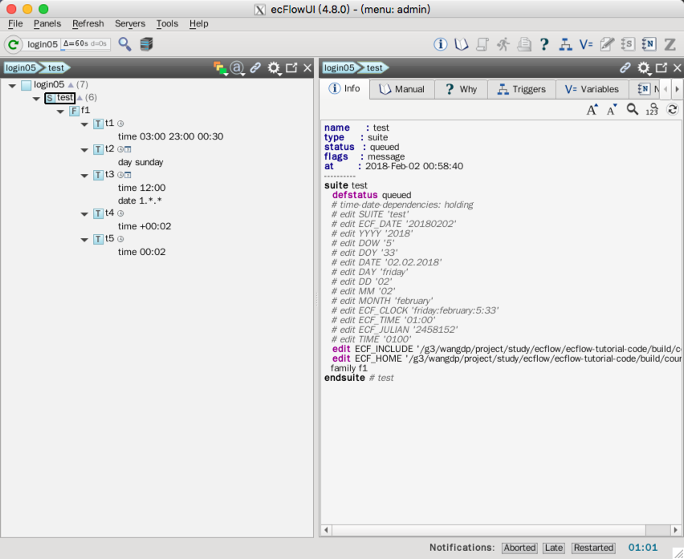

时间依赖
有时希望在某个特定时间点运行某个任务，或者每三个小时运行，或者每月第一天，或者星期一。
依赖种类
时间
- 绝对时间：在确定时间点运行
- 相对时间：相对于 suite 的启动时间
时间依赖可以按规则间隔重复。一旦所有时间点都运行结束，节点变为 complete 状态。
time 23:00 # at next 23:00
time 10:00 20:00 01:00 # every hour from 10am to 8pm
time +00:01 # one minute after the suite has begun
time +00:10 01:00 00:05 # 10 to 60 minutes after begin every 5 minutes
最后一个示例中，如果任务运行超过5分钟，则会错过时间点。
日期（date or day）
日期依赖使用 date 或 day 指定。 日期依赖都是绝对的，但可以使用通配符。
date 31.12.2012 # the 31st of December 2012
date 01.*.* # every first of the month
date *.10.* # every day in October
date 1.*.2008 # every first of the month, but only in 2008
day monday # every monday
cron
Cron 依赖使用 cron 关键字。cron 与 time 不同，设置 cron 的节点运行完成后立刻再次排队。
cron 使用 real time clock 而不是 hybrid clock
cron 23:00 # every day at 23:00
cron 08:00 12:00 01:00 # every hour between 8 and 12
cron -w 0,2 11:00 # every sunday and tuesday at 11 am
cron -d 1,15 02:00 # every 1st and 15th of each month at 2 am
cron -m 1 -d 1 14:00 # every first of January at 2 pm
Time, Today, Cron
当 time 过期后，对应的节点可以随意运行，time 仍然保持过期，直到节点被重新排队。
依赖设置
每个任务可以有多个时间和日期依赖：
task tt
day monday # Here Day/date acts like a guard over the time. i.e time is not considered until Monday
time 10:00 # run on Monday at 10 am
task tt
day sunday # On the same node, Day/date act like a guard over the time attributes.
day wednesday
date 01.*.* # The first of every month and year
date 10.*.* # The tenth of every month and year
time 01:00 # The time is only set free *if* we are on one of the day/dates
time 16:00
上面的任务将在周日和周三的上午1点、下午4点运行，并且当天是每月的1号或10号。
同一个节点设置多个时间依赖时，相同类型的依赖是或关系，不同类型的依赖是和关系。
类似 trigger，date 和 time 依赖可以设置在 family 层。这种情况下，该 family 下的 task 将根据这些依赖关系运行。
注意：所有时间相关的依赖关系（例如 cron，time，today，date 和 day） 都相对于 suite 的时钟（clock）。更多信息请查看《Dates and Clocks》。
文本方式
让我们修改 definition 文件，添加一个 family f2。为了简便，下面的代码中省略前面的 family f1。
# Definition of the suite test
suite test
edit ECF_INCLUDE "$ECF_HOME" # replace '$ECF_HOME' with the path to your ECF_HOME directory
edit ECF_HOME "$ECF_HOME"
family f2
edit SLEEP 20
task t1
time 00:30 23:30 00:30
task t2
day sunday
task t3
date 01.*.*
time 12:00
task t4
time +00:02
task t5
time 00:02
endfamily
endsuite
Python
省略 family f1 部分代码。
import os
from pathlib import Path
from ecflow import Defs, Suite, Task, Family, Edit, Trigger, Event, Complete, Meter, Time, Day, Date
def create_family_f2():
return Family(
"f1",
Edit(SLEEP=20),
Task("t1",
Time("03:00 23:00 00:30")),
Task("t2",
Day("sunday")),
Task("t3",
Date("1.*.*"),
Time("12:00")
),
Task("t4",
Time("+00:02")),
Task("t5",
Time("00:02"))
)
print("Creating suite definition")
home = os.path.abspath(Path(Path(__file__).parent, "../../../build/course"))
defs = Defs(
Suite('test',
Edit(ECF_INCLUDE=home, ECF_HOME=home),
create_family_f2()))
print(defs)
print("Checking job creation: .ecf -> .job0")
print(defs.check_job_creation())
print("Saving definition to file 'test.def'")
defs.save_as_defs(str(Path(home, "test.def")))
# To restore the definition from file 'test.def' we can use:
# restored_defs = ecflow.Defs("test.def")
运行脚本：
$python test.py
Creating suite definition
# 4.8.0
suite test
edit ECF_INCLUDE '/g3/wangdp/project/study/ecflow/ecflow-tutorial-code/build/course'
edit ECF_HOME '/g3/wangdp/project/study/ecflow/ecflow-tutorial-code/build/course'
family f2
edit SLEEP '20'
task t1
time 03:00 23:00 00:30
task t2
day sunday
task t3
time 12:00
date 1.*.*
task t4
time +00:02
task t5
time 00:02
endfamily
endsuite
Checking job creation: .ecf -> .job0
Saving definition to file 'test.def'
任务
修改 suite definition 文件
拷贝
/test/f1/t7创建所有需要的 ecf script加载并启动 suite

ecflow_ui 有个独立的窗口解释为啥某个任务处于 queued 状态。选择一个 queued 任务，点击问号按钮